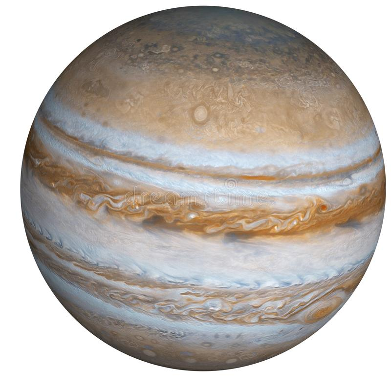

Jupiter has a long history of surprising scientists – all the way back to 1610 when Galileo Galilei
found the first moons beyond Earth. That discovery changed the way we see the universe.
Fifth in line from the Sun, Jupiter is, by far, the largest planet in the solar system – more than
twice as massive as all the other planets combined.
Jupiter's familiar stripes and swirls are actually cold, windy clouds of ammonia and water, floating
in an atmosphere of hydrogen and helium. Jupiter’s iconic Great Red Spot is a giant storm bigger
than Earth that has raged for hundreds of years.
One spacecraft – NASA's Juno orbiter – is currently exploring this giant world.

Orbit and Rotation
Jupiter has the shortest day in the solar system. One day on Jupiter takes only about 10 hours (the
time it takes for Jupiter to rotate or spin around once), and Jupiter makes a complete orbit around
the Sun (a year in Jovian time) in about 12 Earth years (4,333 Earth days).
Its equator is tilted with respect to its orbital path around the Sun by just 3 degrees. This means
Jupiter spins nearly upright and does not have seasons as extreme as other planets do.
Moons
With four large moons and many smaller moons, Jupiter forms a kind of miniature solar system.
Jupiter has 53 confirmed moons and 26 provisional moons awaiting confirmation of discovery. Moons
are named after they are confirmed.
Jupiter's four largest moons – Io, Europa, Ganymede, and Callisto – were first observed by the
astronomer Galileo Galilei in 1610 using an early version of the telescope. These four moons are
known today as the Galilean satellites, and they're some of the most fascinating destinations in our
solar system. Io is the most volcanically active body in the solar system. Ganymede is the largest
moon in the solar system (even bigger than the planet Mercury). Callisto’s very few small craters
indicate a small degree of current surface activity. A liquid-water ocean with the ingredients for
life may lie beneath the frozen crust of Europa, making it a tempting place to explore.